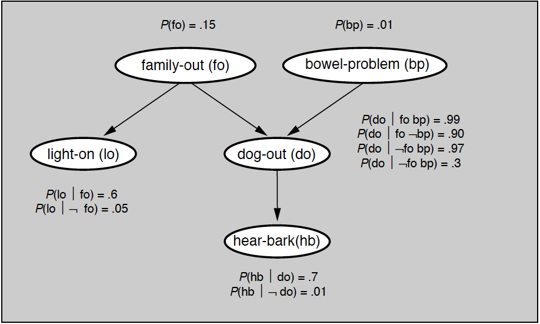
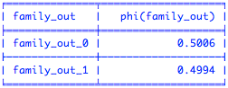
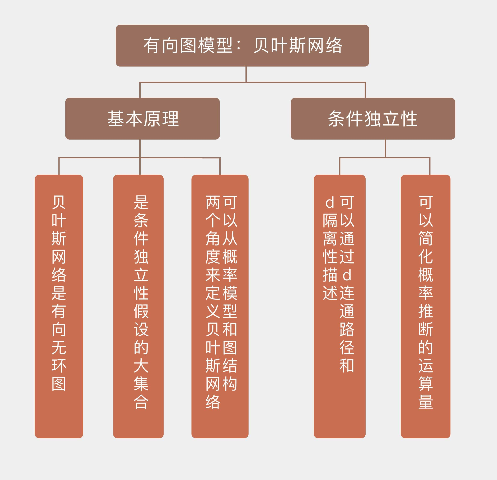

- 00 开篇词 打通修炼机器学习的任督二脉.md
- 01 频率视角下的机器学习.md
- 02 贝叶斯视角下的机器学习.md
- 03 学什么与怎么学.md
- 04 计算学习理论.md
- 05 模型的分类方式.md
- 06 模型的设计准则.md
- 07 模型的验证方法.md
- 08 模型的评估指标.md
- 09 实验设计.md
- 10 特征预处理.md
- 11 基础线性回归：一元与多元.md
- 12 正则化处理：收缩方法与边际化.md
- 13 线性降维：主成分的使用.md
- 14 非线性降维：流形学习.md
- 15 从回归到分类：联系函数与降维.md
- 16 建模非正态分布：广义线性模型.md
- 17 几何角度看分类：支持向量机.md
- 18 从全局到局部：核技巧.md
- 19 非参数化的局部模型：K近邻.md
- 20 基于距离的学习：聚类与度量学习.md
- 21 基函数扩展：属性的非线性化.md
- 22 自适应的基函数：神经网络.md
- 23 层次化的神经网络：深度学习.md
- 24 深度编解码：表示学习.md
- 25 基于特征的区域划分：树模型.md
- 26 集成化处理：Boosting与Bagging.md
- 27 万能模型：梯度提升与随机森林.md
- 28 最简单的概率图：朴素贝叶斯.md
- 29 有向图模型：贝叶斯网络.md
- 30 无向图模型：马尔可夫随机场.md
- 31 建模连续分布：高斯网络.md
- 32 从有限到无限：高斯过程.md
- 33 序列化建模：隐马尔可夫模型.md
- 34 连续序列化模型：线性动态系统.md
- 35 精确推断：变量消除及其拓展.md
- 36 确定近似推断：变分贝叶斯.md
- 37 随机近似推断：MCMC.md
- 38 完备数据下的参数学习：有向图与无向图.md
- 39 隐变量下的参数学习：EM方法与混合模型.md
- 40 结构学习：基于约束与基于评分.md
- 如何成为机器学习工程师？.md
- 总结课 机器学习的模型体系.md
- 总结课 贝叶斯学习的模型体系.md
- 结课 终有一天，你将为今天的付出骄傲.md
29 有向图模型：贝叶斯网络
在上一篇文章中，我和你分享了最简单的概率图模型——朴素贝叶斯分类器。由于朴素贝叶斯假定不同的属性相互独立，因而它的概率图具有发散的星型结构。但在实际当中，这样的条件独立性几乎是不可能满足的，属性之间总会有些概率性的关联，如果将属性之间的关联体现在概率图模型中，就相当于把朴素贝叶斯中互相独立的结点联结起来，得到的正是贝叶斯网络。
贝叶斯网络（Bayesian network）也叫信念网络（belief network），由一些顶点和连接某些顶点的边构成，每个顶点代表一个随机变量，带箭头的有向边则表示随机变量之间的因果关系。
从拓扑结构看，贝叶斯网络是有向无环图，“有向”指的是连接不同顶点的边是有方向的，起点和终点不能调换，这说明由因到果的逻辑关系不能颠倒；“无环”指的是从任意顶点出发都无法经过若干条边回到该点，在图中找不到任何环路，这说明任何变量都不能自己决定自己。
贝叶斯网络是对随机变量以及存在于它们之间的不确定性的一种表示（representation），它以因子分解的方式定义了联合概率分布的数据结构，还给出了这个分布中的一系列条件独立性假设。
下面这个例子出自发表于《AI季刊》（AI Magazine）第12卷第4期的论文《傻瓜贝叶斯网络》（Bayesian networks without tears），它说明当事件之间的因果关系不能完全确定时，基于概率的贝叶斯网络是如何发挥作用的。
“假设有一天我回家晚了，还碰巧没带钥匙，所以在敲门之前我想先看看家里有没有人。我太太的习惯是不在家时把廊外灯打开，但如果有客人约定来访的话，即使她在家时也会开灯。另外，我还养了一条狗，家里没人的时候会把狗锁在院子里。但狗在院子里也不能确定地说明家里没人，因为如果狗狗犯错的话也会被不让进屋。反正不管怎样，只有狗狗在外面，听到门口有人它就会叫，但我又分辨不出到底是不是我家的狗在叫。那么问题来了，如何判断我家里到底有没有人呢？”
在这个例子中，所有的因果联系都不是绝对的，灯开不意味着家里肯定没人，狗在院子里也一样。如果灯是开着的但没有听到狗叫，或者听到狗叫但是灯没开，这些情况下就只能对家里有没有人做出概率性的推断。贝叶斯网络就是概率推断的有力工具，它的条件独立性可以在已知的概率值较少时依然做出准确的推断。下图就是利用已知的因果联系构造出的贝叶斯网络。
“家里有没有人”的贝叶斯网络
从结构上看，条件独立性在一定程度上简化了随机变量的关系，在给定父结点的条件下，每个结点都和它的所有非后代结点条件独立。这意味着每个结点的概率既取决于它的父结点，也取决于它的子结点。从结构上看，父结点、子结点以及子结点的后代结点共同形成一条逻辑关系上的通路，概率的变化就是在这条通路上传导。如果其他结点不在这条通路上，就大概率不会受到处在通路上的结点的影响。
在上面的例子中，“听到狗叫”是“狗在外面”的子结点，而它本身又没有后代结点。所以只要“狗在外面”这个事件确定了，那么能不能听到狗叫就不会被任何其他变量提供的信息所影响。但对于狗是不是在外面这个问题，事情就没有那么简单了，它既会受到“家人外出”和“狗犯错”这两个父结点的影响，也会受“听到狗叫”这个子结点的影响，其中每一个的变化都会改变对于“狗在外面”这个论述的判断。

给定条件概率的贝叶斯网络
要对贝叶斯网络进行定量计算，就需要给每个根结点所表示的随机变量赋予概率值，同时给表示不同结点之间依赖关系的每条有向边所代表的所有条件概率赋值。上图给出了确定条件概率取值之后的贝叶斯网络。根据这些概率就可以计算一种情况——当灯是开着的但没有听到狗叫时，家里有人的概率。具体的求解方法今天先不讨论，留到后面再做解释，本篇先把重点放在贝叶斯网络的结构特性上。
结构上的条件独立性降低了贝叶斯网络所需要求解的概率的数目，从而在根本上降低推断的计算成本。在上面的例子中，随机变量的数目，也就是结点的数目是5个，每个随机变量又都只有2种可能的取值。在不考虑条件独立性时，要定义这5个随机变量的联合分布的话，就得计算\(2^5 - 1 = 31\)个联合概率的值。从数学上看，所有变量的联合分布可以写成
\[ p(fo, bp, lo, do, hb) = p(fo)p(bp | fo)p(lo | bp, fo)p(do | lo, bp, fo)p(hb | do, lo, bp, fo) \]
但是在条件独立性下，每个结点上只需要计算\(2 ^ m\)个条件概率，其中\(m\)是指向这个结点的有向边数目。这样计算下来，在上面的例子中只需要定义10个条件概率就可以解出任何一种可能性，这就是条件独立性带来的运算便利。相应地，联合分布的表达式也会简化为
\[ p(fo, bp, lo, do, hb) = p(fo)p(bp)p(lo | fo)p(do | bp, fo)p(hb | do) \]
这样的简化在这个特例里看起来并不起眼，可一旦贝叶斯网络的规模增加到具有成百上千个结点，这种简化的重要性就会凸显出来。
贝叶斯网络可以视为一个条件独立性的大集合。在这个集合中，除了显式存在的条件独立关系之外，还能不能根据它的因子分解读出隐藏的条件独立关系呢？答案是肯定的。
在“人工智能基础课”中，我介绍了近邻结点之间顺连（linear）、分连（diverging）、汇连（converging）等基本的连接方式。这三种基本结构都隐含着各自的条件独立性，它们的组合又可以形成更加复杂的连接方式，构成新的条件独立关系。这是贝叶斯网络中的核心概念，值得多花一些笔墨来介绍。
在复杂的网络中，两个结点就像公交线路的起点和终点，中间还间隔着若干个站点，这些站点之间的线路都是单行线，但方向又可能有所不同。这时要判断起点和终点之间的线路到底能不能承载信息的传输，就需要使用特定的准则。不严谨地说，在给定一些证据（evidence），也就是某些结点的取值固定时，如果一个结点的变化会影响到另一个结点的变化，那它们就是\(d\)连通的（\(d\)-connected），它们之间存在着\(d\)连接路径（\(d\)-connecting path）。反过来，不存在\(d\)连接路径的两个结点就是\(d\)分离的（\(d\)-separation）。
和全称命题\(d\)分离相比，存在性的\(d\)连通概念更容易理解。那么如何判定在给定证据集时，两个结点是否是\(d\)连通的呢？这需要让两结点之间的所有结点都满足以下两个条件中的任意一个：
以顺连或者分连的形式连接，且不属于证据集
以汇连形式连接，且结点本身或者其子结点属于证据集
第一个条件容易理解：它相当于在两个结点之间直接构造出一条有向的通道，通道中每个结点的取值都不是固定的，这保证了信息流动的畅通无阻。第二个条件则相当于用证据生成两个结点的关联。就像在上面的例子中，在不知道狗是否在外面时，“家人外出”和“狗犯错”两者是相互独立、互不影响的。可一旦狗在外面作为证据出现，同时又知道家人没有外出，就立刻可以确定是狗犯错了。这就是通过汇连结构间接实现信息通路的实例。
\(d\)分离性是条件独立性的充分必要条件，它既具备可靠性（soundness）也具备完备性（completeness）。如果两个结点是\(d\)分离的，那它们就肯定满足条件独立；反过来如果两个结点条件独立，两者之间也必定不会存在\(d\)连接路径。所以用\(d\)分离的概念可以通过简单地检测网络的连通性来推断因子分解分布的独立性，这是验证条件独立性的具体方法，对于简化大规模的复杂网络非常重要。
由\(d\)分离性可以引出马尔可夫毯（Markov blanket）的概念。将所有结点分成互斥的若干个子集，如果在给定集合\(X\)的条件下，集合\(A\)中的任何变量都和集合\(B\)条件独立，那么满足这一条件的最小集合\(X\)就是集合\(A\)的马尔可夫毯。这里的\(A\)和\(B\)就像两个不同的交际圈，两者你走你的阳关道，我过我的独木桥，只有在\(X\)的牵线搭桥之下才会有所来往。
马尔可夫毯的意义在于划定了描述集合\(A\)所需要的数据范围，一个结点的马尔可夫毯包括它的父结点、子结点和共父结点，也就是子结点的其他父结点。马尔可夫毯包含了所有关于集合中变量的信息，非马尔可夫毯中的变量在描述\(A\)时都是冗余的。如果要计算\(A\)中变量的概率，就不需要惊动所有变量，只需要对马尔可夫毯进行处理就可以了。
从图结构的角度分析贝叶斯网络的话，还可以定义出独立图的概念。独立图（Independency map, I-map）是对概率分布进行拆解的产物。如果概率分布\(P\)中所有的条件独立性都能够在有向无环的图结构\(\\mathscr G\)中表示出来，那么\(\\mathscr G\)就是\(P\)的独立图。
有了独立图的概念之后，就可以从概率模型和图结构两个角度来定义贝叶斯网络。所谓贝叶斯网络其实就是由\(({\\mathscr G}, P)\)构成的偶对，其中概率分布\(P\)可以根据图\(\\mathscr G\)进行因子分解，图\(\\mathscr G\)是分布\(P\)分解得到的独立图。这两种解释共同构成了对贝叶斯网络，以及所有概率图模型的综合阐释。
要在Python语言中实现概率图模型的话，可以使用第三方库pgmpy，这是由《利用Python掌握概率图模型》（Mastering Probabilistic Graphical Models using Python）的作者安库尔·安坎（Ankur Ankan）所开发并维护的。
利用这个库可以实现前文的例子中给出的模型。在使用中，建模贝叶斯网络需要用到models模块的BayesianModel类，定义离散的条件概率需要用到factors.discrete模块的TabularCPD类，具体的构造方式你可以查看代码。
在构造完成之后，不妨做个小实验，测试一下当门外灯亮却没有听到狗叫时，家中有人的概率。这里将所有的二元随机变量为真的情况设为取0值，为假的情况设为取1值，因此“门外灯亮却没有听到狗叫”就可以记作“light_on = 0, hear_bark = 1”。将这两个变量的取值代入到网络中进行推断，可以计算出家里有人和没人的可能性几乎是一半一半。

文中贝叶斯网络实例的推理结果
今天我和你分享了贝叶斯网络的基本原理，包含以下四个要点：
贝叶斯网络是有向无环图，可以用于因果推断；
贝叶斯网络既是具有条件独立性的随机变量的联合分布，也是联合概率分布的因子分解结果；
贝叶斯网络中的条件独立性可以通过\(d\)连通路径和\(d\)隔离性描述；
贝叶斯网络的概率分布描述和独立图描述可以相互转换。
目前，贝叶斯网络及其推断在医疗诊断中已经得到了广泛的应用。那么你是如何看待概率推断在医疗领域中的使用，自动化推断和人类医生相比又有哪些优势劣势呢？
欢迎分享你的观点。

© 2019 - 2023 Liangliang Lee. Powered by gin and hexo-theme-book.